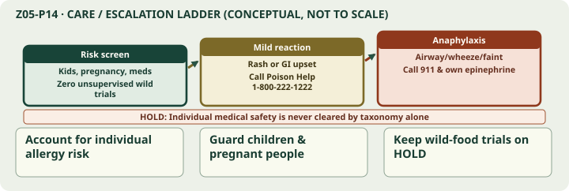

Z05-P14 · Wild foods and poisonous lookalikes · New manuscript
Individual Allergies, Drug Interactions and Vulnerable Populations
Recognize that even correctly identified wild species can trigger severe allergic reactions, medication interactions, or pediatric/pregnancy harm.
When it applies · Risk boundaries for children, pregnant/nursing people, older adults, and people with allergies or chronic illness.
Equipment · Minnesota Poison Control 1-800-222-1222, personal allergy/medication list.

Actions
- Recognize that cross-reactive food and pollen allergies (such as ragweed/Asteraceae, birch-pollen/fruit, nut, or fungal sensitivities) can cause hives or life-threatening anaphylaxis even from familiar species.[B10, B21, M14]
- Apply heightened caution for young children (who have low body weight and put attractive berries in mouths rapidly), pregnant or nursing individuals, and people taking anticoagulants, cardiac, or renal medications.[B10, B21]
- Maintain strict WITHHELD_HOLD status across Z05 and never conduct unsupervised wild-food trials in remote locations far from emergency medical care.[B21, B24]
Failure recognition · Assuming a botanical note applies safely to every person ignores fatal nut/pollen anaphylaxis, pediatric dose sensitivity, and drug interactions.[B10, B21]
Verify · Individual allergy, pediatric, pregnancy, and medication exclusions are respected alongside taxonomic HOLD gates.[B10, B21, B24]
Stop or change course · Stop immediately and activate 911 for throat swelling, wheezing, widespread hives, dizziness, or pediatric ingestion of any unknown wild plant or mushroom.[B09, M14]
Evidence and editorial notes
- B09 · National Capital Poison Center · First Aid for Poisonings (Current web edition)
- Section: When to call 911; get help from poison experts · Conditions: Suspected poisoning in the United States
Support: Call 911 for collapse, seizure, trouble breathing or inability to wake. Otherwise promptly call Poison Help at 1-800-222-1222.
Limitations: Use route- and substance-specific advice. Do not wait for symptoms or collect unknown material if doing so risks exposure or delays care. · Conflicting evidence: Conditions are recorded in the A03 audit.
Editorial note: Mandatory Z05 poison-response escalation. · Specialist reviewer: Clinical toxicologist / Poison Center
Primary source · checked 2026-11-25 - B10 · National Capital Poison Center · Poisonous Plants and Berries Overview (Current web edition)
- Section: Poisonous plants, berries, and dose-dependent pediatric risk · Conditions: Household, trailside, and wild berries, seeds, and foliage
Support: Many attractive wild berries, seeds, and roots contain cardiac glycosides, alkaloids, or oxalates that cause rapid toxicity, especially in children.
Limitations: Never sample unknown plants; recognition and consumption suitability remain separate decisions. · Conflicting evidence: None noted.
Editorial note: Separates recognition from consumption. · Specialist reviewer: Clinical toxicologist and botanist
Primary source · checked 2026-11-25
Current assessment · A04-B10 (2026-11-25) · Reopened: earlier closure narrowed (A04): Supports poison avoidance and referral. Compound groups, onset and pediatric outcomes differ by species and exposure. Broad timing and category assertion needs species-level toxicology. Limits: Specialist review PENDING (Clinical toxicologist and botanist); publication HOLD. All release decisions pending. - B21 · USDA Forest Service · Ethnobotany, Wild Foods, and Conservation Precautions (Current web edition)
- Section: Ethnobotanical limits, preparation hazards, and permit rules · Conditions: Wild plant/fungus gathering ethics and toxicity processing limits
Support: Some traditionally used plants contain raw toxins (cyanogenic glycosides, oxalates, tannins, alkaloids) that require verified preparation or remain unsafe for sensitive groups.
Limitations: Historical ethnobotanical mentions are never modern clinical safety clearances; maintain consumption status WITHHELD until qualified review. · Conflicting evidence: None noted.
Editorial note: Enforces recognition-vs-consumption separation. · Specialist reviewer: Ethnobotanist and food toxicologist
Primary source · checked 2026-11-25
Current assessment · A04-B21 (2026-11-25) · Open: support partial or missing (A04): Historical use and hazard examples do not substantiate a safe preparation mechanism or dose for the profile. Consumption remains withheld. Limits: Specialist review PENDING (Ethnobotanist and food toxicologist); publication HOLD. All release decisions pending. - B24 · National Capital Poison Center · Mushroom poisoning: prevention and response (Current reference)
- Section: Prevention tips and what to do after ingestion · Conditions: Wild mushroom recognition and suspected ingestion
Support: Lookalikes can fool observers. Avoid eating wild fungi on unverified identification and seek poison-centre advice promptly after suspected ingestion.
Limitations: Reject folk tests and generated-image clearance as an editorial restriction. Preparation cannot substitute for poison risk or identification review. · Conflicting evidence: Conditions are recorded in the A03 audit.
Editorial note: Enforces Z05 fail-closed edibility rule. · Specialist reviewer: Botanist, mycologist, and clinical toxicologist
Primary source · checked 2026-11-25 - M14 · CDC · What to Do After a Tick Bite (2026)
- Section: How to remove a tick; Symptoms after a tick bite · Conditions: Attached tick on a person in U.S. settings
Support: Remove promptly with clean fine-tipped tweezers close to the skin and steady upward pressure. Clean the site and obtain evaluation for rash or fever in subsequent weeks.
Limitations: No image determines species, prophylaxis or ruling out illness. · Conflicting evidence: See A02 claim audit for boundaries.
Editorial note: Core Upper Midwest vector-borne disease prevention card evidence. · Specialist reviewer: Infectious disease and regional public health
Primary source · checked 2026-11-25
Source lineage · New manuscript (Z05 P19-C clinical limits) · Classification · New manuscript.